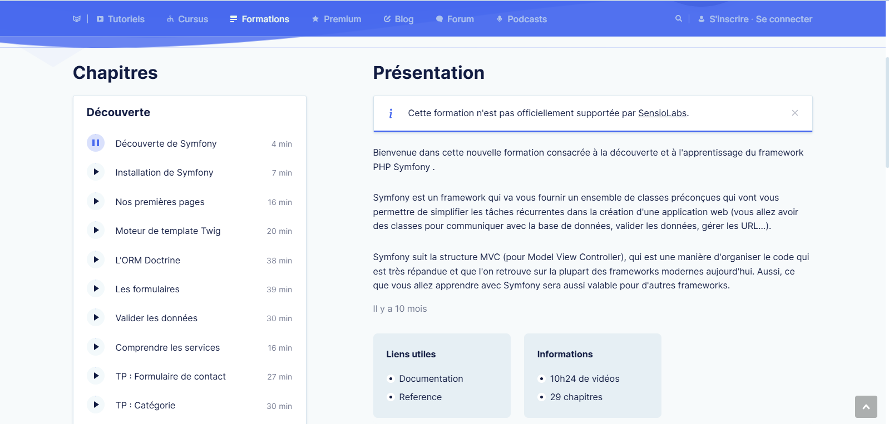
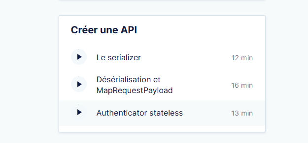
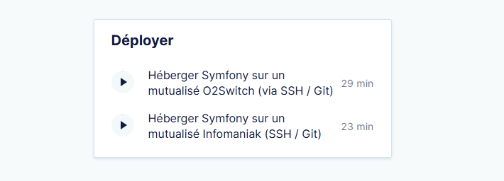
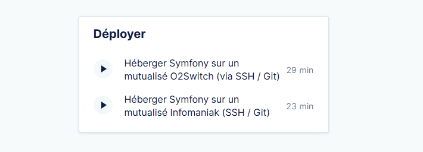

À propos de la formation
Lors de mon stage, mon tuteur m'a recommandé de faire la formation Symfony de Grafikart. Puis de regarder une documentation de Symfony
Présentation de la formation
Quand la formation commence, vous êtes lancer dans le découverte de Symfony, il y aura 25 vidéos à suivre. Par la suite, vous avez la construction d'une API, qui vient s'implémenter avec la découverte.


Après avoir suivie la découverte de symfony et la création d'API, vous êtes lancer dans les Notions Avancées de Symfony
Ce qui nous pousse à nous perfectionner dans Symfony, après l'apprentissage des notions, nous pouvons suivre le déploiement de notre création par Symfony
 
